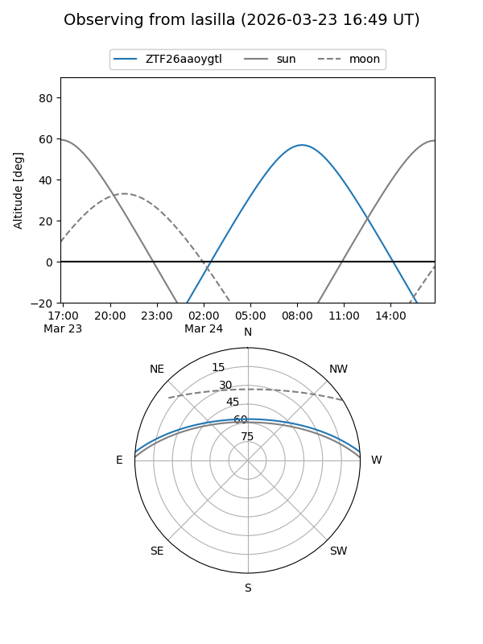
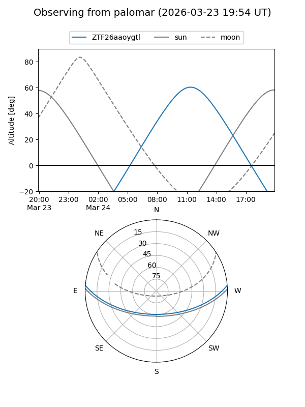

ZTF26aaoygtl
Target ZTF26aaoygtl at 2026-03-23 13:09
Aliases and brokers:
FINK: link
Lasair: link
ALeRCE: link
alt names
ZTF26aaoygtl (ztf,fink_ztf)
Coordinates:
equatorial (ra, dec) = 235.4211,+3.86880
equatorial (HMS+DMS) = 15:41:41.05,+03:52:07.69
galactic (l, b) = (10.7579,+43.21939)
Flags:
Photometry:
last ztfg=18.91
1 ztfg detections
Lightcurve
Visibility


Additional plots